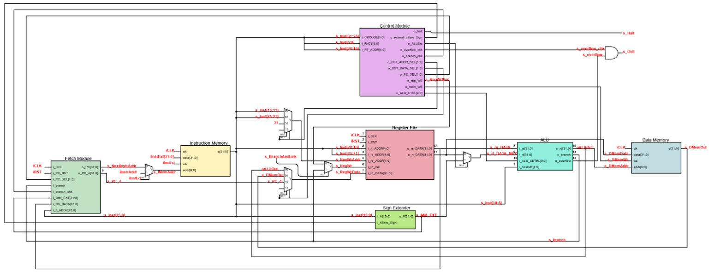
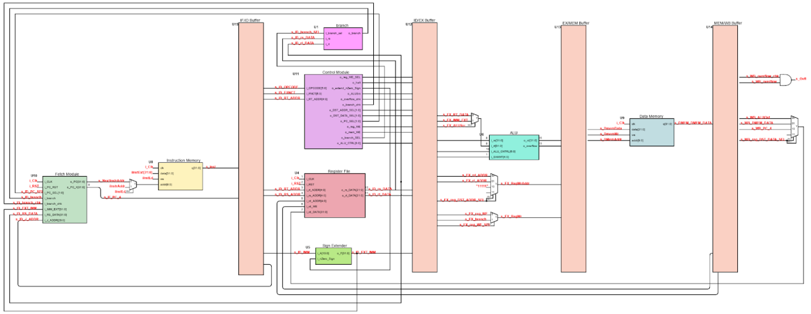

My favorite class project I have done was Spring 2023 in CPRE 381
(Computer Architecture). Throughout the class we implemented three different basic MIPS processors
implementing many of the basic instructions such as: add, addi, sub, subi, beq, bne, j, jal, jr, and, or, xor,
andi, ori, xori, etc. This project was very challenging but taught me how to use VHDL and gave me a very
strong core understanding of how a processor works. Additionally, I got to experience with QuestaSim and
learned how to use some of the powerful features of it.
The first processor my partner and I implemented was a single stage processor. We split the work
so each module I made he tested and vice versa. We both made some of the components in some previous labs like the register file.
Once each of us made our half and tested the other half, we met up one night to put together the top level design. We stayed up late
that night getting all test programs to work. I really enjoyed working on this project and it was so satifing to get the test program with
recursion to work and the "Grendel" program that ran over 2000 dynamic instructions to work properly.
The next processor we implement was a software scheduled 5 stage pipeline. Implementing
it was relatively simple. My partner inserted the pipeline register in between each file while I rewrote all of our
test code to be software scheduled.
The final processor we made was a hardware scheduled pipeline with forwarding.
On this processor we had to handle stalling and flushing required to avoid hazards. It ran all the same programs that
the single stage ran but at a significantly higher frequency allowing for higher performance. Additionally,
we added a predict branch taken predictor to it. Once we completed all the portions of this processor we decided
to load it onto an FPGA for extra credit. This experience built onto my previous experience in CPRE 281 with FPGAs
and was very fun to see our semester of work run on hardware.
Image Gallery

Single stage MIPS processor high level design

Five stage pipeline MIPS processor high level design